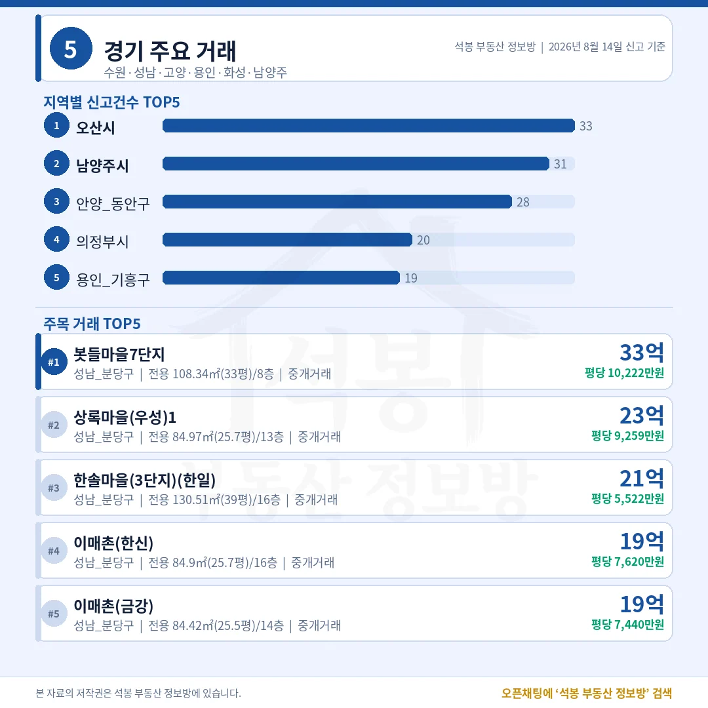
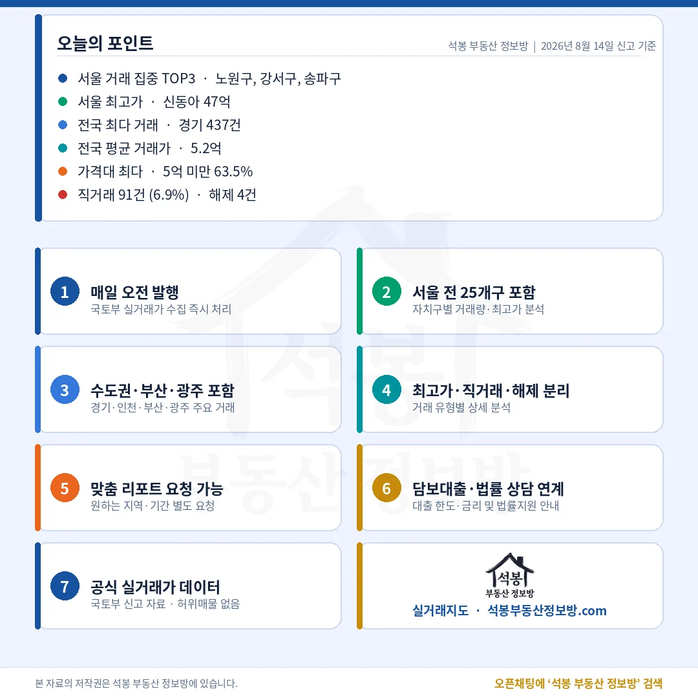

신동아는 50.5평을 채워 총액 1위가 됐지만 평당은 9,404만원입니다. 25평 남짓한 주공5단지가 그 두 배 가까이 됩니다. 세 건의 계약일은 7월 21·22·24일로 흩어져 있습니다.
분당 33.5억이 해운대 29억을 앞섰습니다

서울 밖 상단은 판교와 해운대 두 곳이 갈라 가졌습니다.
지역
신고
최고가 단지
거래가
평당(전용)
경기
437건
분당 삼평동 봇들마을7단지
33.5억
10,222만
부산
81건
해운대 중동 엘시티
29.0억
6,646만
울산
19건
남구 신정동 문수로대공원에일린의뜰
12.5억
4,872만
경남
96건
창원 용호동 용지더샵레이크파크
11.2억
4,402만
인천
54건
연수 송도동 송도더샵마스터뷰23-1BL
11.2억
2,937만
경기 1위 봇들마을7단지는 전용 108.3㎡(32.8평) 33.5억으로, 평당 1억을 넘긴 유일한 서울 밖 거래였습니다. 부산 1위 엘시티는 43.6평 29.0억인데 평당은 6,646만원입니다.
평당 1위는 도곡동 한신 1억 9,435만원

구간
전국
서울
경기
부산
20억 이상
32건
27건
3건
2건
15억 이상
60건
46건
12건
2건
10억 이상
139건
90건
34건
5건
서울 27건은 송파 13, 강남 4, 용산 3, 서초·영등포 각 2건 순입니다.
20억을 넘긴 서른두 건 가운데 스물일곱이 서울이었고, 그 절반에 가까운 열세 건이 송파 한 곳에서 나왔습니다. 강남과 서초를 합친 여섯 건의 두 배가 넘습니다. 재건축을 앞둔 잠실 단지들이 고가 구간을 밀어 올린 하루였고, 그래서 건수가 열여덟 건뿐인 송파의 중위가 23.0억까지 올라갔습니다.
평당으로 줄을 세우면 순위가 또 바뀝니다. 1위는 강남 도곡동 한신으로 전용 52.7㎡(16.0평)를 31.0억에 넘기며 평당 1억 9,435만원을 기록했습니다. 총액 상위 다섯에는 이름도 없는 1985년생 단지입니다. 평당 상위 네 자리를 1978년과 1985년에 지은 아파트가 채웠다는 것은, 값을 만든 것이 건물이 아니라 그 땅이라는 뜻으로 읽힙니다.
표 보는 법 · 직거래는 중개사를 끼지 않고 당사자끼리 한 거래입니다. 면적과 평당 단가는 모두 전용면적 기준이고, 평은 ㎡를 3.3058로 나눈 값입니다. 중위 거래가는 그 지역 거래를 금액순으로 줄 세웠을 때 한가운데 값이라 평균보다 체감에 가깝습니다. 중위·평균은 해제·취소 건을 빼고 계산했고, 건수와 비중은 카드뉴스와 맞추기 위해 해제 포함 전체 신고를 분모로 썼습니다.
원자료: 국토교통부 실거래가 공개시스템 (2026년 8월 14일 신고분 기준, 아파트 매매 1,314건) · 편집·제작: 석봉 부동산 정보방 · 신고분은 계약일과 신고일이 다를 수 있으며 해제·취소 건이 뒤늦게 반영될 수 있습니다 · 본 자료는 정보 제공 목적이며 투자 권유가 아닙니다.